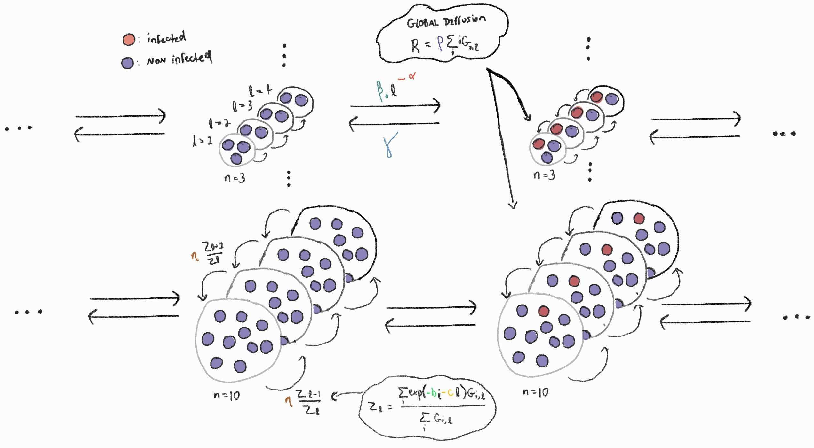

resdb = DuckDBClient.of({
sourcesink1: FileAttachment("sourcesink1.parquet"),
sourcesink2: FileAttachment("sourcesink2.parquet"),
sourcesink3: FileAttachment("sourcesink3.parquet")
})Description
The key ingredients of the source-sink model1 are groups \(G\) of various size with a certain number of adopters \(i\) and of institution of level \(\ell\). We assume that with higher levels of institutional strength, \(\ell\), the institution will more effectively promote group-beneficial behavior, \(\ell\)\(\beta\). As it gets better, each adopter in the group also gain a collective benefit \(b\). But all of these toodily-doo perks are offset by an institutional implementation costs, \(c\), of entertaining larger groups. For instance, think of the process of unionization, promoting behaviors that are costly at individual level. When unionization becomes more successful, the unions can become ungaingly. Lastly adopters lose their behavioural trait at a rate \(\gamma\).
First master equation2:
\[\begin{align*} \frac{d}{dt}G_{i,\ell}^{diff} &= \ell \mathbin{\color{darkgreen}{\beta}} [(i-1) + R](n - i + 1)G_{i-1,\ell} \\ &- \ell\mathbin{\color{darkgreen}{\beta}} (i+R)(n-i) G_{i,\ell} \\ &+ \mathbin{\color{red}{\gamma}}(i+1)G_{i+1,\ell} - \mathbin{\color{red}{\gamma}} i G_{i,\ell} \end{align*}\]where \(R = \mathbin{\color{blue}{\rho}} \sum_{i',\ell'} i'G_{i',\ell'}\) represents the global diffusion of behaviors and primes denote variable over which we sum to calculate global quantity. The sum over adopters at each level weighted by global behavioural diffusion \(\rho\).
Second master equation:
\[\begin{align*} \frac{d}{dt}G_{i,\ell}^{select} &= \mathbin{\color{blue}{\rho}} [G_{i,\ell-1}(Z_\ell Z_{\ell-1}^{-1} + \mathbin{\color{midnightblue}{\mu}}) + G_{i,\ell+1}(Z\ell Z_{\ell + 1}^{-1} + \mathbin{\color{midnightblue}{\mu}})] \\ &-\mathbin{\color{blue}{\rho}}(Z_{\ell-1}Z_\ell^{-1} + Z_{\ell+1}^{-1} + 2\mathbin{\color{midnightblue}{\mu}})G_{i,\ell} \end{align*}\]where \(Z_\ell = \frac{\sum_{i'} exp(\mathbin{\color{seagreen}{b}}i'- \mathbin{\color{darkred}{c}}\ell)G_{i',\ell}}{\sum_{i'}G_{i',\ell}}\). Note that we add a constant rate of transition \(\mu\) to the selection proces.
Taken together we have the set of master equations:
\[ \frac{d}{dt}G_{i,\ell} = \frac{d}{dt}G_{i,\ell}^{diff} + \frac{d}{dt}G_{i,\ell}^{select} \]
Julia model
function source_sink!(du, u, p, t)
G, L, n = u, length(u.x), length(first(u.x))
β, γ, ρ, b, c, μ = p
Z, pop, R = zeros(L), zeros(L), 0.
# Calculate mean-field coupling and observed fitness landscape
for ℓ in 1:L
n_adopt = collect(0:(n-1))
Z[ℓ] = sum(exp.(b*n_adopt .- c*(ℓ-1)) .* G.x[ℓ])
pop[ℓ] = sum(G.x[ℓ])
R += sum(ρ*n_adopt .* G.x[ℓ])
pop[ℓ] > 0.0 && ( Z[ℓ] /= pop[ℓ] )
end
for ℓ = 1:L, i = 1:n
n_adopt, gr_size = i-1, n-1
# Diffusion events
du.x[ℓ][i] = -γ*n_adopt*G.x[ℓ][i] - (ℓ-1)*β*(n_adopt+R)*(gr_size-n_adopt)*G.x[ℓ][i]
n_adopt > 0 && ( du.x[ℓ][i] += β*(ℓ-1)*(n_adopt-1+R)*(gr_size-n_adopt+1)*G.x[ℓ][i-1])
n_adopt < gr_size && ( du.x[ℓ][i] += γ*(n_adopt+1)*G.x[ℓ][i+1] )
# Group selection process
ℓ > 1 && ( du.x[ℓ][i] += ρ*G.x[ℓ-1][i]*(Z[ℓ] / Z[ℓ-1] + μ) - ρ*G.x[ℓ][i]*(Z[ℓ-1] / Z[ℓ]+μ) )
ℓ < L && ( du.x[ℓ][i] += ρ*G.x[ℓ+1][i]*(Z[ℓ] / Z[ℓ+1] + μ) - ρ*G.x[ℓ][i]*(Z[ℓ+1] / Z[ℓ]+μ) )
end
endAnalysis
```{ojs}
//| panel: sidebar
sourcesink1 = resdb.query(`SELECT DISTINCT name FROM sourcesink1`)
lookup1 = {
const out = {}s
out['idx2name'] = {0: "β", 1: 'γ', 2: 'ρ', 3: 'b', 4: 'c', 5: 'μ'}
out['name2idx'] = {"β": 0, 'γ': 1, 'ρ': 2, 'b': 3, 'c': 4, 'μ': 5}
return out
}
p1 = get_param_table(sourcesink1, lookup1)
viewof s1 = Inputs.form({
β: Inputs.range(p1['β']['minmax'], {step: p1['β']['s'], label: "β"}),
γ: Inputs.range(p1['γ']['minmax'], {step: p1['γ']['s'], label: "γ"}),
ρ: Inputs.range(p1['ρ']['minmax'], {step: p1['ρ']['s'], label: "ρ"}),
b: Inputs.range(p1['b']['minmax'], {step: p1['b']['s'], label: "b"}),
c: Inputs.range(p1['c']['minmax'], {step: p1['c']['s'], label: "c"}),
μ: Inputs.range(p1['μ']['minmax'], {step: p1['μ']['s'], label: "μ"})
})
data = resdb.query(`
SELECT timestep::INT as timestep, L::INT as L, value, name
FROM sourcesink1
WHERE
name = '${f(s1['β'])}_${f(s1['γ'])}_${f(s1['ρ'])}_${f(s1['b'])}_${f(s1['c'])}_${f(s1['μ'])}'
`)
```
OJS Syntax Error (line 124, column 17)Unexpected token
Takeaways:
- Frequency of behaviour in groups with different institutional strength.
- Within groups, the frequency of cooperative behaviour follows the strength of institutions (with ℓ = 1 in light beige and ℓ = 6 in dark red).
- Qualitatively, no institutions are possible if institutional costs are too high, and the behaviour never spreads.
- The time dynamics of global behavioural frequency and behaviour in groups can include patterns of surge and collapse.
Description
The key difference in that model from the last is that contagion is something to be limited by institutions of various levels. As such, \(\beta\) in our model now must be negative while \(\alpha\) must be positive for transmission to fall with \(\ell\).
We ask ourselves to what extent the contagion is able to spread with very little \(\beta\) values.
We want institutions to be able to stop contagions but contagion must exist in the first place.
\[\begin{align*} \frac{d}{dt}G_{i,\ell}^{\text{epi}} &= \beta {\color{red}{\ell}}^{\color{red}{-\alpha}} [(i-1) + R](n - i + 1)G_{i-1,\ell} \\ &- \beta {\color{red}{\ell}}^{\color{red}{-\alpha}} (i+R)(n-i) G_{i,\ell} \\ &+ \gamma(i+1)G_{i+1,\ell} - \mathbin{\gamma} i G_{i,\ell} \end{align*}\]where \(R = \mathbin{\rho} \sum_{i',\ell'} i'G_{i',\ell'}\) represents the global diffusion of behaviors and primes denote variable over which we sum to calculate global quantity. The sum over adopters at each level weighted by global behavioural diffusion \(\rho\).
function source_sink2!(du, u, p, t)
G, L, n = u, length(u.x), length(first(u.x))
β, α, γ, ρ, b, c, μ = p
Z, pop, R = zeros(L), zeros(L), 0.
# Calculate mean-field coupling and observed fitness landscape
for ℓ in 1:L
n_adopt = collect(0:(n-1))
Z[ℓ] = sum(exp.(b*n_adopt .- c*(ℓ-1)) .* G.x[ℓ])
pop[ℓ] = sum(G.x[ℓ])
R += sum(ρ * n_adopt .* G.x[ℓ])
pop[ℓ] > 0.0 && ( Z[ℓ] /= pop[ℓ] )
end
for ℓ = 1:L, i = 1:n
n_adopt, gr_size = i-1, n-1
# Diffusion events
du.x[ℓ][i] = -γ*n_adopt*G.x[ℓ][i] - β*(ℓ^-α)*(n_adopt+R)*(gr_size-n_adopt)*G.x[ℓ][i]
n_adopt > 0 && ( du.x[ℓ][i] += β*(ℓ^-α)*(n_adopt-1+R)*(gr_size-n_adopt+1)*G.x[ℓ][i-1])
n_adopt < gr_size && ( du.x[ℓ][i] += γ*(n_adopt+1)*G.x[ℓ][i+1] )
# Group selection process
ℓ > 1 && ( du.x[ℓ][i] += ρ*G.x[ℓ-1][i]*(Z[ℓ] / Z[ℓ-1] + μ) - ρ*G.x[ℓ][i]*(Z[ℓ-1] / Z[ℓ]+μ) )
ℓ < L && ( du.x[ℓ][i] += ρ*G.x[ℓ+1][i]*(Z[ℓ] / Z[ℓ+1] + μ) - ρ*G.x[ℓ][i]*(Z[ℓ+1] / Z[ℓ]+μ) )
end
endPlot
data_hm2 = get_data_heatmap(data2b, lookup2, facet_var2, fp2, ax_vars2, r2, s2b)
Description
UPDATE DESCRIPTION. WHY DO WE CARE. IS IT USEFUL FOR POLICY?! WHO AM I?
function source_sink3!(du, u, p, t)
G, L, n = u, length(u.x), length(u.x[1])
β, γ, ρ, b, c, μ = p
Z, pop, R = zeros(L), zeros(L), 0.
# Calculate mean-field coupling and observed fitness landscape
# In the following, the functions g (cost-benefits for groups) and g̃ (fitness function) are taken equal to function f. The three have similar properties.
for ℓ in 1:L
n_adopt = collect(0:(n-1))
Z[ℓ] = sum(f.(b*n_adopt .- c*(ℓ-1)) .* G.x[ℓ])
pop[ℓ] = sum(G.x[ℓ])
R += sum(n_adopt .* G.x[ℓ]) # Global diffusion
pop[ℓ] > 0.0 && ( Z[ℓ] /= pop[ℓ] )
end
for ℓ = 1:L, i = 1:n
n_adopt, gr_size = i-1, n-1
# Inndividual selection process
du.x[ℓ][i] = -n_adopt*f(1-h(ℓ))*G.x[ℓ][i] - (gr_size-n_adopt)*f(h(ℓ)-1)*G.x[ℓ][i]
du.x[ℓ][i] += -n_adopt*(gr_size-n_adopt)*(β+γ)*G.x[ℓ][i] - ρ*(gr_size-n_adopt)*β*R*G.x[ℓ][i] - ρ*n_adopt*γ*(gr_size-R)*G.x[ℓ][i]
n_adopt > 0 && ( du.x[ℓ][i] += (gr_size-n_adopt+1)*f(h(ℓ)-1)*G.x[ℓ][i-1] + β*(n_adopt-1+ρ*R)*(gr_size-n_adopt+1)*G.x[ℓ][i-1] )
n_adopt < gr_size && ( du.x[ℓ][i] += (n_adopt+1)*f(1-h(ℓ))*G.x[ℓ][i+1] + γ*(gr_size-n_adopt-1+ρ*(gr_size-R))*(n_adopt+1)*G.x[ℓ][i+1] )
# Group selection process
ℓ > 1 && ( du.x[ℓ][i] += f(b*n_adopt-c*(ℓ-1))*(μ+ρ*Z[ℓ]/Z[ℓ-1])*G.x[ℓ-1][i] - (μ*f(c*(ℓ-1)-b*n_adopt)+ρ*f(b*n_adopt-c*(ℓ-2))*Z[ℓ-1]/Z[ℓ])*G.x[ℓ][i] )
ℓ < L && ( du.x[ℓ][i] += (μ*f(c*ℓ-b*n_adopt)+ρ*f(b*n_adopt-c*(ℓ-1))*Z[ℓ]/Z[ℓ+1])*G.x[ℓ+1][i] - f(b*n_adopt-c*ℓ)*(μ+ρ*Z[ℓ+1]/Z[ℓ])*G.x[ℓ][i] )
end
endPlayground
data_hm3 = get_data_heatmap(data3b, lookup3, facet_var3, fp3, ax_vars3, r3, s3b)
Model 1 Sketch

```{ojs helpers}
function get_fixed_params(param_table, ax_vars, fx) {
const all_params = [...Object.keys(param_table)]
const varying_params = new Set(ax_vars.concat(fx))
const diff_params = new Set(all_params.filter((x) => !varying_params.has(x)))
return Array.from(diff_params)
}
f = (x) => Number.isInteger(x) ? x.toPrecision(2) : x
// Param table where each key is a parameter, and values
// are list of values relevant to
// model: resdb output for a specific model
// lookup: { [0: param1, 1: param2, ...] }
function get_param_table(model, lookup) {
// Extract the step from a list of values for a parameter
const s = (p,i) => {
const unique_vals = Array.from(new Set(p.map(d => parseFloat(d[i]))))
.sort((a,b) => a - b)
const out = []
for (let i=1; i < unique_vals.length; i++ ) {
out.push(+(unique_vals[i]-unique_vals[i-1]).toPrecision(2))
} // return whatev if length is zero
return out.length === 0 ? 0.1 : out[0]
}
const minmax = (p, i) => d3.extent(p.map(d => parseFloat(d[i])))
const p = model.map(d => d.name.split("_"))
const param_table = {}
const first_line_param = p[0]
for ( let i=0; i < first_line_param.length; i++ ) {
param_table[lookup['idx2name'][i]] = { 's': s(p,i), 'first_val': first_line_param[i], 'minmax': minmax(p,i) }
}
return param_table
}
// To get heatmap data, we need
// data: data from resdb join `name` and `L`
// ax_vars: variables we want as x,y,z
// fx: variable to facet
// fp: other vars
// sliders: set of sliders
function get_data_heatmap(data, lookup, fx, fp, ax_vars, radios, sliders) {
const dat_hm = [];
for (let i=0; i < data.length; i++) {
const p_split = data[i].name.split('_')
const vs = {} // dictionary containing all the values of selected parameters
const [ax0, ax1, ax2] = ax_vars
vs[ax0] = parseFloat(p_split[lookup['name2idx'][ax0]])
vs[ax1] = parseFloat(p_split[lookup['name2idx'][ax1]])
vs[ax2] = parseFloat(p_split[lookup['name2idx'][ax2]])
for (let i=0; i < fp.length; i++) {
vs[fp[i]] = parseFloat(p_split[lookup['name2idx'][fp[i]]])
}
const hm_vals_i = {
'L': data[i].L,
'fx' : p_split[lookup['name2idx'][fx]],
'param1': parseFloat(p_split[lookup['name2idx'][radios['x']]]),
'param2': parseFloat(p_split[lookup['name2idx'][radios['y']]]),
'value': data[i].value_prop
}
if (vs[fp[0]] === sliders['fp0'] && vs[fp[1]] === sliders['fp1'] && vs[fp[2]] === sliders['fp2'] && vs[fp[3]] == sliders['fp3'] && vs[fp[4]] == sliders['fp4']) {
// if ax1 == x && ax2 ==y, then ax0 == z
if (radios['x'] == ax1 && radios['y'] == ax2 && vs[ax0] == sliders['ax0']) {
dat_hm.push(hm_vals_i)
} else if (radios['x'] == ax0 && radios['y'] == ax2 && vs[ax1] == sliders['ax1']) {
dat_hm.push(hm_vals_i)
} else if (radios['x'] == ax0 && radios['y'] == ax1 && vs[ax2] == sliders['ax2']) {
dat_hm.push(hm_vals_i)
}
}
}
return dat_hm
}
function plot_time_evo(d) {
return Plot.plot({
x: {type:"log"},
marginLeft: 50,
color: {scheme: "reds", type: "ordinal", legend: true},
marks: [
Plot.line(
d, {
x: 'timestep', y: "value", stroke: "L"
}),
Plot.dot(
d, {
x: 'timestep', y: "value", stroke: "L"
})
]
})
}
function phase_diagram(d, x, y) {
return PlotDev.plot({
width: 400,
color: {
range: [0, 1],
legend: true,
scheme: "YlGnBu"
},
x: { label: x },
y: { label: y },
<<<<<<< HEAD
<<<<<<< HEAD
<<<<<<< HEAD
<<<<<<< HEAD
fy: { label: fy },
facet: { data: d, x: "L", y: typeof fy !== undefined ? 'fx' : null },
marks: [
PlotDev.raster(d, {
x: "param1",
y: "param2",
fill: "value",
interpolate: "nearest"
}),
]
})
}
```
OJS Syntax Error (line 507, column 1)Unexpected token
:::
Model 1 Sketch
:::
Footnotes
@article{hebert-dufresne_source-sink_nodate, title = {Source-sink behavioural dynamics limit institutional evolution in a group-structured society}, volume = {9}, url = {https://royalsocietypublishing.org/doi/full/10.1098/rsos.211743}, doi = {10.1098/rsos.211743}, number = {3}, urldate = {2022-05-26}, journal = {Royal Society Open Science}, author = {Hébert-Dufresne, Laurent and Waring, Timothy M. and St-Onge, Guillaume and Niles, Meredith T. and Kati Corlew, Laura and Dube, Matthew P. and Miller, Stephanie J. and Gotelli, Nicholas J. and McGill, Brian J.}}, }↩︎
A sidenote on master equations for non-physicists. The citation for master equations in the original paper is the following:
Hébert-Dufresne, L., Noël, P.-A., Marceau, V., Allard, A., & Dubé, L. J. (2010). Propagation dynamics on networks featuring complex topologies. Physical Review E, 82(3), 036115. https://doi.org/10.1103/PhysRevE.82.036115
The term ‘’master equation’’ is not mentionned once in the paper. But they do talk about “a mean-field description used to coherently couple the dynamics of the network elements (nodes, vertices, individuals…) and their recurrent topological patterns (subgraphs, groups…)” that yields a set of ODEs for the time evolution of the system. Another paper writen by Guillaume St-Onge et al. is a more generous in their description of master equation:
St-Onge, G., Thibeault, V., Allard, A., Dubé, L. J., & Hébert-Dufresne, L. (2021). Master equation analysis of mesoscopic localization in contagion dynamics on higher-order networks. Physical Review E, 103(3), 032301. https://doi.org/10.1103/PhysRevE.103.032301
In it, section II does a great job of describing what master equations are and why they are powerful modeling tools. Relevant to this model, we learn that the size of a group is determined by drawing from a group size distribution. This is what we do in our intialization scheme above. We also learn that these 3 following papers are relevant to understand master equations:
↩︎Lindquist, J., Ma, J., van den Driessche, P., & Willeboordse, F. H. (2011). Effective degree network disease models. Journal of Mathematical Biology, 62(2), 143–164. https://doi.org/10.1007/s00285-010-0331-2
Gleeson, J. P. (2011). High-Accuracy Approximation of Binary-State Dynamics on Networks. Physical Review Letters, 107(6), 068701. https://doi.org/10.1103/PhysRevLett.107.068701
Marceau, V., Noël, P.-A., Hébert-Dufresne, L., Allard, A., & Dubé, L. J. (2010). Adaptive networks: Coevolution of disease and topology. Physical Review E, 82(3), 036116. https://doi.org/10.1103/PhysRevE.82.036116